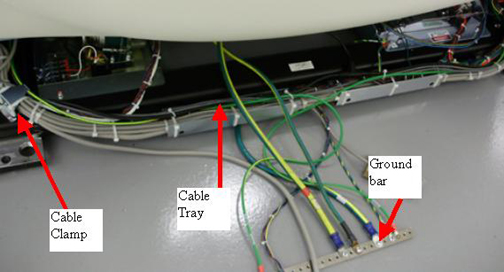

Media File 2: Cable Harness drawing

| NOTE: | When feeding cables to the left and right sides of the gantry in later steps, feeding the cables under the cable clamps will save time instead of removing and reinstalling the clamps if space allows. |
Illustration 18: Gantry cable tray

| NOTE: | Open the following cable harness drawing as a reference when installing the cable harness. The drawing shows the cables and connection locations as well as harness location with respect to the gantry cable clamps shown above. |
Media File 2: Cable Harness drawing